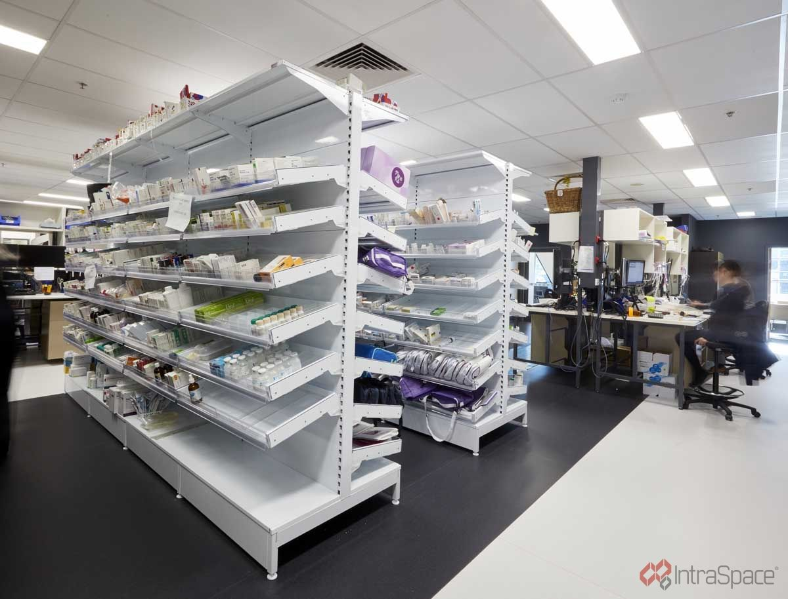

Your facility already has the data. Regnum makes it answer back.
Stock, expiry, spend and demand sit in different spreadsheets, and nobody has time to reconcile them. Regnum Personia works on top of the records you already keep and tells you what is about to go wrong while there is still time to act.
- Runs offline on your own hardware
- Your data never leaves the building
- No migration, no change to how you work
- Stock value
- P 284.6k
- Expiring in 30 days
- 14 items
- Below reorder
- 6 lines
Pilot in progressMeasured from 2026
| Item | Finding | Action |
|---|---|---|
| Amoxicillin 500mg | 11 days of cover left | Reorder |
| Batch #4471 | Expires in 26 days, still moving | Redistribute |
| Gloves, nitrile M | Supply healthy | None |
Illustrative sample dataPula
Nothing is broken. Everything is just slightly out of sync.
Most practices are not badly run. They are running four systems that do not speak to each other, and paying for it in small, invisible ways.
Stock you find out about late
The shortage is discovered at the counter, and the expiry is discovered in the bin. Both were visible in the data weeks earlier.
Spreadsheets that drift apart
One file for stock, one for orders, one the accountant likes. Every month someone spends a day making them agree with each other.
Reporting that arrives too late to act on
By the time the month-end pack is ready, the decision it was meant to inform was made three weeks ago on a hunch.
One workspace, nine rooms
Each part of the app answers a question somebody in the practice asks every week.
Dashboard
The five things worth knowing before the doors open, on one screen, refreshed live.
Inventory
Batches, expiry dates, reorder levels and movement history, all searchable, filterable, and honest about what has not moved.
Finances
Spend, margin and revenue by period, with exports your bookkeeper can open without a conversion step.
AI insights
Demand forecasts, expiry-risk scoring, anomaly flags and refill suggestions, each one showing its working.
Data upload
Drop in the CSV or Excel file you already keep. Regnum maps the columns, flags the odd rows, and keeps the history.
Users & roles
Four permission levels, so a locum sees stock and a manager sees margins. Every action is logged.
Ask your stock a question
Regnum takes plain-language questions and answers them from your own records. Pick one below to see the shape of an answer.
Figures above are illustrative sample data. In the app the same question runs against your own records.
Move two dials and watch the risk move
A reorder level fixed at “30 units” is a guess frozen in time. Regnum recalculates cover from actual consumption and your real lead times, so the alert arrives when there is still time to place an order.
- Adaptive reorder points that follow the season
- Expiry risk scored per batch, not per product
- Anomaly flags when consumption stops looking like itself

home-dispensary.jpg · 1600×1200
Made for the person holding the clipboard
Regnum was designed watching how stock actually gets counted: standing up, mid-shift, with a queue forming. That is why the counting screens are big-buttoned, the searches are forgiving, and nothing important hides three menus deep.
Six builds, in a real healthcare facility, in this order
Anyone can demonstrate software on invented data. Regnum is being built against a working healthcare facility's own records, and measured before it is allowed to predict anything.
| Build | What happens | Measured result |
|---|---|---|
| 01Take the data as it is | Inventory, purchases, suppliers, batches, expiry, consumption, receipts, adjustments, costs and lead times, in the format the facility already uses. CSV today, a database connection tomorrow. | Not yet |
| 02Establish truth first | Count the shelf, compare it to the system, record the variance. System 140, counted 126, variance −14. That is a baseline, and without one no improvement can ever be proven. | Not yet |
| 03Forecast, then mark the forecast | Every prediction is stored with a due date and settled against the real count when it arrives. Accuracy becomes a measured figure rather than a claim. | Not yet |
| 04Predict wastage, not expiry dates | Not “expires December”, but 320 units, 83 days, 190 expected to move, 130 units of excess, and what that excess is worth. | Not yet |
| 05Connect it to money | What is tied up in inventory, what is at risk, what emergency ordering cost this quarter, and where the overstock is. Stock and finance from one set of records. | Not yet |
| 06Flag the odd day | Normal is 20 to 30 a day; Tuesday moved 94. Regnum says review recommended, and deliberately says nothing about why. That judgement belongs to a person. | Not yet |
Honest numbers about the build
We are in pilot. Rather than quote accuracy figures we have not yet earned, here is what actually exists. The performance numbers go up on the scorecard once the facility has produced them.
We would rather show you than tell you
Send us a sample of the spreadsheet you keep today. We will load it into a copy of Regnum and walk you through what it says about your own practice. No obligation, no card.